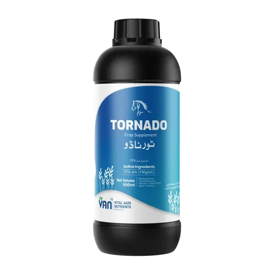

Our brands / Soil Health & Biologicals / Tornado

Soil Health & BiologicalsOwn-brand available
Tornado
Amino · Fulvic · Humic · Seaweed
How it is applied
Foliar
Stage
Mid-lifeMaturity
What the soil does to this
90.2% below 0.86% organic matter · mean 0.61%
The soil has almost no carbon left to work with.
Punjab soil testing programme · 36 district workbooks · 770,160 valid samples · c. 2016–2018. The figure describes the soil. It is not a claim for the product.
Tell us the quantity and your district. We reply with price, availability and delivery. Every batch is tested in LAB 336, PNAC · ISO/IEC 17025:2017.
Specification
Product
Tornado
Analysis
Amino · Fulvic · Humic · Seaweed
Category
Soil Health & Biologicals
Application
Foliar
Stage
Mid-life · Maturity
Availability
Own-brand availableSame specification, your brand name. Same line, same QC, your label.
Registration
Registered with PSQCA and released through VAN’s own PNAC-accredited laboratory, ISO/IEC 17025:2017, LAB 336.
Certificate
Send the batch number off the bag and VAN sends the certificate of analysis for that batch. Verify a bag →
Programmes that use it
From the published wheat programme. Per acre. “1 bag” means 1 bag of the size printed under the rate.
| Crop | Stage | Band | Rate | Method | Pack |
|---|---|---|---|---|---|
| Wheat | Grand Growth | Foliar | 2 pack | Spray | Pack · 0.5 L |
Documents
Deck, datasheet, safety data
What it is, what it does in the soil, where it fits in the season and what VAN will not claim for it.
Also in Soil Health & Biologicals